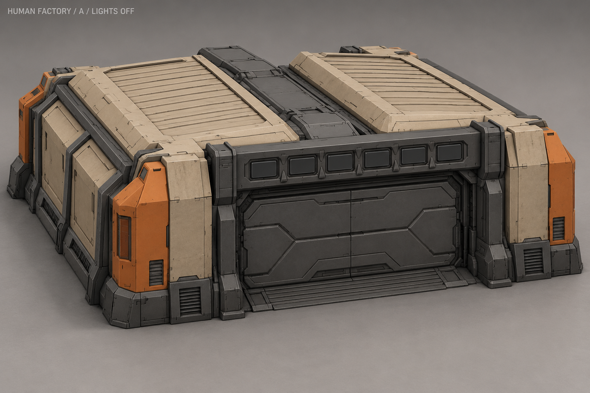
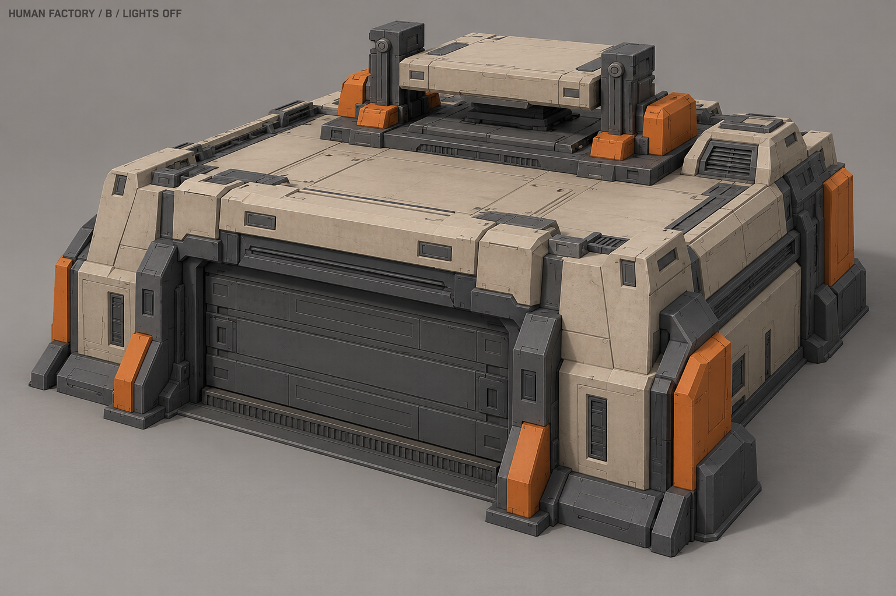
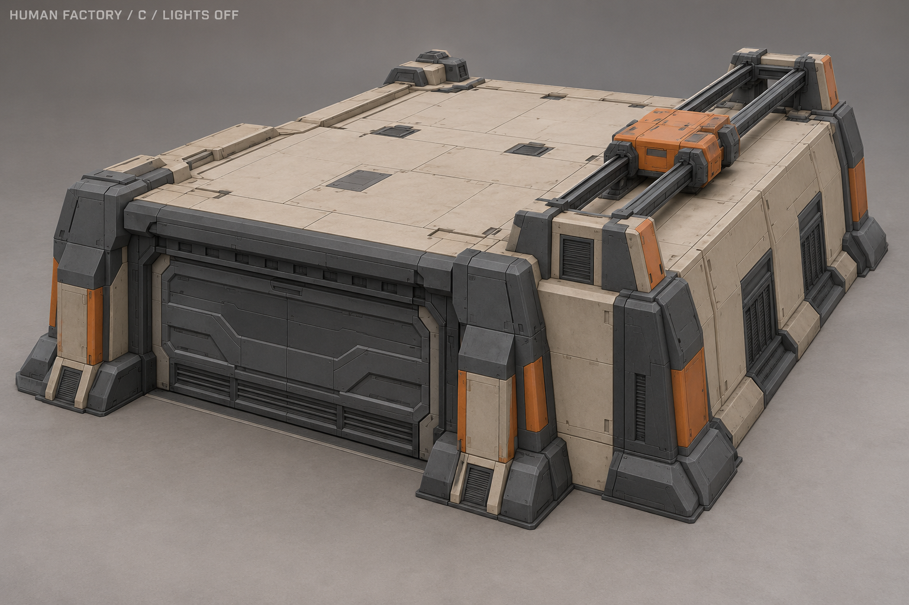
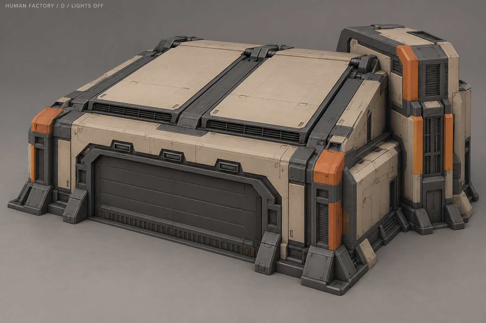
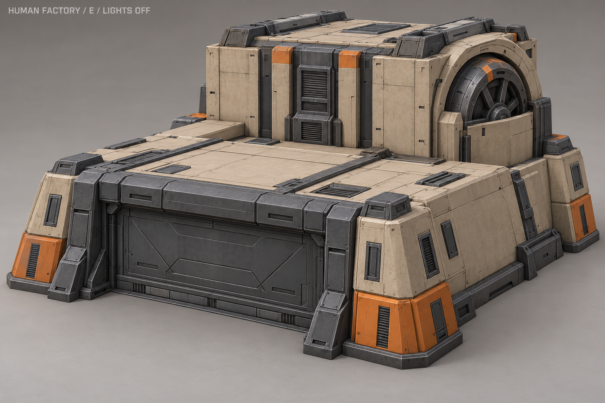
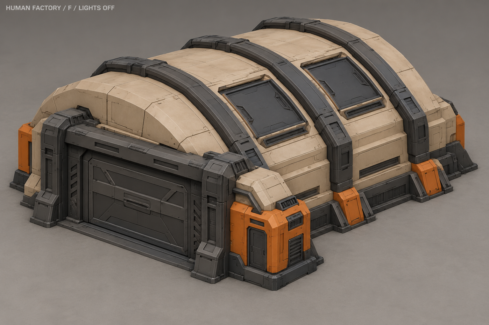
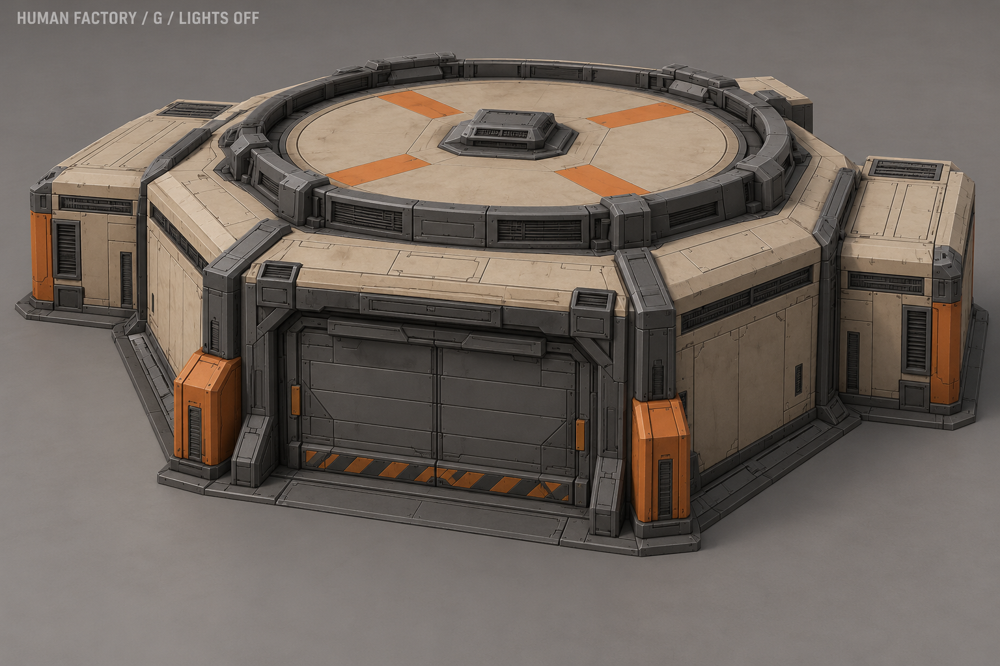
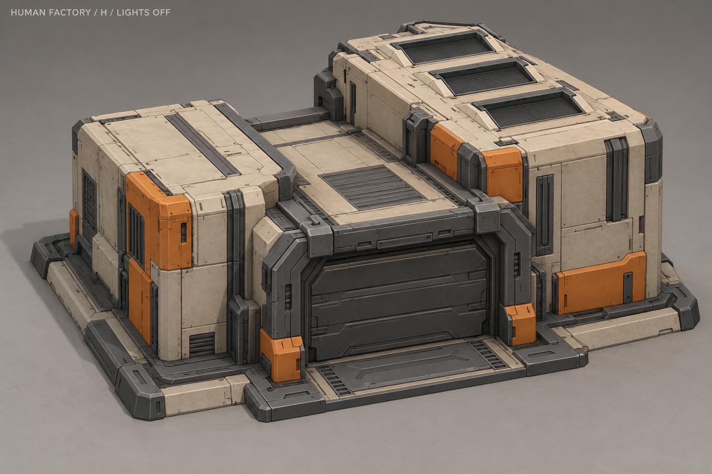

A «Сборочный цех»Два сборочных пролёта и широкие закрытые ворота.Отдельная схема работы очередиСветовая последовательность над воротами.Не вход для AI-текстурирования, не игровой клип.ОжиданиеПроизводствоИсследованиеОтмена
B «Испытательная плита»Единый корпус с испытательной плитой.Отдельная схема работы очередиКороткие вертикальные ходы плиты в направляющих.Не вход для AI-текстурирования, не игровой клип.ОжиданиеПроизводствоИсследованиеОтмена
C «Передаточный мост»Низкий цех с передаточным мостом на крыше.Отдельная схема работы очередиОдин передаточный узел ходит вдоль рельсов и возвращается.Не вход для AI-текстурирования, не игровой клип.ОжиданиеПроизводствоИсследованиеОтмена
D «Тепловой цикл»Цех с техническим боковым блоком.Отдельная схема работы очередиДве вентиляционные створки приподнимаются поочерёдно.Не вход для AI-текстурирования, не игровой клип.ОжиданиеПроизводствоИсследованиеОтмена
E «Привод»Низкий передний зал и высокий блок привода.Отдельная схема работы очередиМаховик вращается внутри неподвижного защитного кожуха.Не вход для AI-текстурирования, не игровой клип.ОжиданиеПроизводствоИсследованиеОтмена
F «Бронесвод»Широкий гранёный бронесвод.Отдельная схема работы очередиСветовой цикл в панелях на плече свода.Не вход для AI-текстурирования, не игровой клип.ОжиданиеПроизводствоИсследованиеОтмена
G «Карусель»Гранёный корпус с карусельным узлом.Отдельная схема работы очередиДиск поворачивается внутри неподвижной защитной рамы.Не вход для AI-текстурирования, не игровой клип.ОжиданиеПроизводствоИсследованиеОтмена
H «Сдвиг»Два смещённых объёма с центральным выпускным залом.Отдельная схема работы очередиСтупенчатая последовательность световых панелей.Не вход для AI-текстурирования, не игровой клип.ОжиданиеПроизводствоИсследованиеОтмена